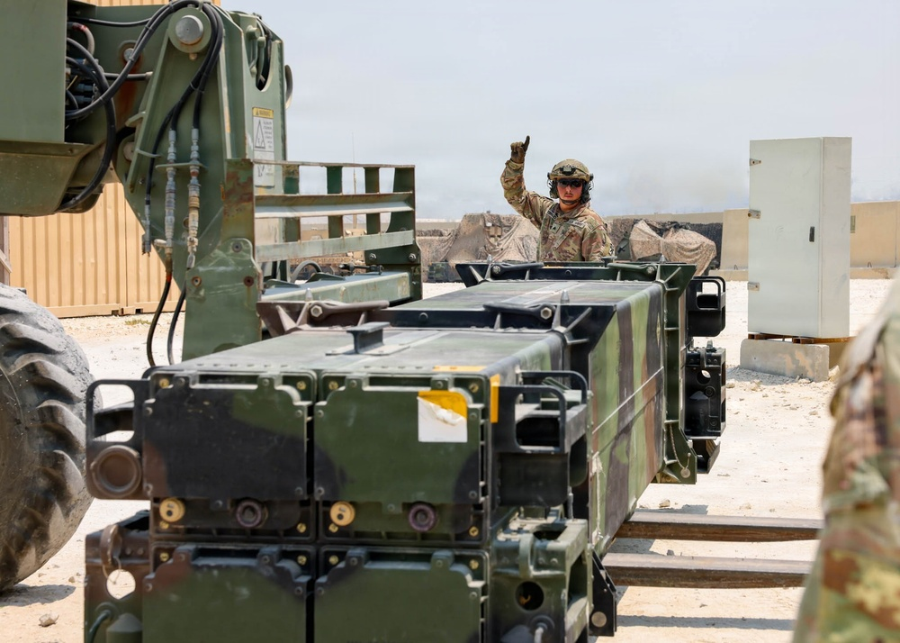

The Pentagon put $450 million into a U.S. tungsten producer
The Department of War said Wednesday it is putting $450 million of redeemable preferred equity into The Elmet Group, through the Industrial Base Analysis and Sustainment program, to expand domestic tungsten processing. The release says Elmet is the only U.S.-owned, fully integrated producer of tungsten and molybdenum and that it supports more than 100 defense programs, including the F-35, Patriot PAC-3, and Virginia- and Columbia-class submarines. The money will also stand up the only independent ammonium paratungstate plant in North America. Defense News notes a federal rule that bars tungsten mined or processed in China, Russia, Iran, or North Korea from defense use is due Jan. 1, and that the United States has not mined tungsten since 2015. Official still is a Patriot interceptor resupply in the Middle East on Sept. 8, not the plant.